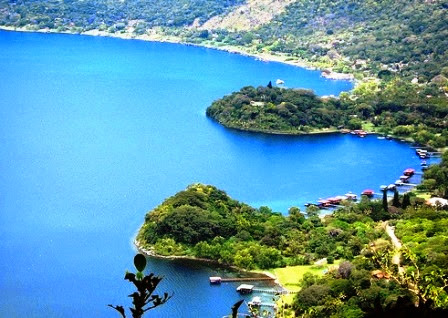
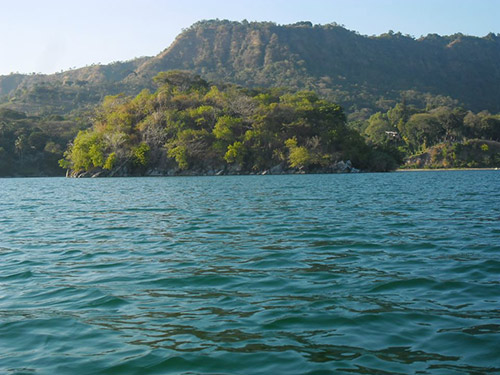
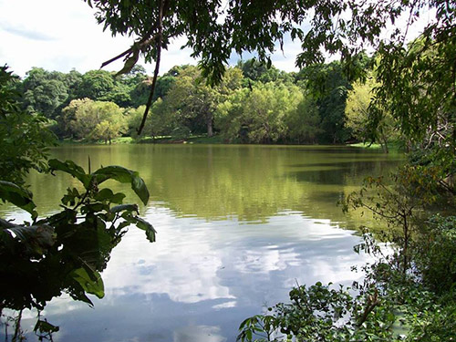
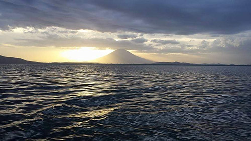

Lago de Coatepeque
No has conocido aún una de las siete maravillas del mundo?
Si deseas hacerlo debes visitar el municipio de El Congo en la ciudad de Santa Ana. Allí encontrarás el lago Coatepeque, preferido por los turistas por su belleza natural. Las aguas cristalinas que se reflejan el cielo es uno de sus principales atractivos, además de la calma que se respira en el lugar. Por esta y otras razones muchos visitantes lo prefieren y regresan cada temporada a disfrutar de sus hermosos espacios naturales. Pero si no buscas solamente relajarte, sino también el disfrute, puedes practicar algún deporte acuático de tú preferencia, pues su profundidad permite realizar dichas actividades. Entre ellos natación, pesca, buceo, remo y jet ski, lo que no te permite dejarlo de lado al momento de vacacionar. Un dato que no podemos olvidar es que el lago es de origen volcánico, aportándole singularidad a sus espacios naturales. Razón suficiente para visitar los lagos y lagunas de El Salvador.
Consulta la ubicación de: Lago de Coatepeque
Lago de Güija

Si pensabas que las joyas son sólo prendas que lucir, estas totalmente equivocado
En el municipio de Metapán, exactamente en el departamento de Santa Ana encontrarás una joya natural que podrás disfrutar en toda la extensión de la palabra. La belleza del lugar se le acredita a las dos penínsulas que la revisten, donde encontraremos hermosas islas como Teotipa, Tule e Iguatepec. Sin lugar a dudas disfrutaremos de las aguas provenientes de los ríos Ostua, Angue y Cusmapa que se reúnen en un mismo lugar para formar la belleza natural del Lago de Güija. Su belleza continúa, pues deleita nuestra vista con una variedad de volcanes en los alrededores, hablamos de Mita, San Diego y Cerro quemado. Estructura geológica que es parte de las bellezas naturales de El Salvador, aportando una hermosa vista en su paisaje natural. Es aquí, donde conocerás otro de los lagos y lagunas de El Salvador.
Consulta la ubicación de: Lago la Güija
Lago Suchitlán

Si deseas visitar otro de los lagos y lagunas de El Salvador, Las bellezas naturales no se hacen esperar en el municipio Suchitoto; en el departamento Cuscatlán.
Allí la magia de la naturaleza se hace presente través de numerosas plantas marinas que se forman a las orillas del lago. Su procedencia artificial no le impide ser un ecosistema adecuado para el crecimiento de la naturaleza. Convirtiéndose en un disfrute visual para los turistas que visitan la zona. Otro de sus atractivos turísticos es la presencia de especies marinas que hacen vida en las aguas de este hermoso lugar. Su fauna más vistosa está compuesta por conejos, pichiches, zarzetas y tortugas de monte, todas ellas introducidas en los espacios. Si decides enfrentar esta travesía no te arrepentirás, pues el entretenimiento lo tendrás a la vuelta de la esquina al practicar kayak o dar un paseo en ferri. Si por cualquier razón no consigues llegar al lugar, puedes preguntar por el Embalse del Cerrón Grande, nombre que también lo identifica.
Consulta la ubicación de: Lago Suchitlán
Lago de Ilopango
Definitivamente existe un paraíso aquí en la tierra, y te diremos dónde hallarlo, solo debes visitar el Lago de Ilopango
ubicado entre los departamentos de La Paz, San Salvador y Cuscatlán. Sin duda al verlo sabrás a qué nos referimos, es imposible resistirse al disfrute de sus impresionantes aguas. Las cuales te proporcionan la profundidad suficiente para practicar deportes acuáticos como ski, buceo, kayaking, natación, entre otros. Pero eso no es todo, en caso que desees puedes dar un paseo en barco o navegar a vela, incluso puedes ir de pesca. Sus aguas ofrecen una variedad de peces que podrás conocer en tu travesía, entre ellos encontramos guapotes, juilines y mojarras. Lo que indica que no perderás tiempo en tu actividad pesquera, siempre habrá algo que pescar en el Lago Ilopango. Por lo que es considerado uno de los lagos y lagunas de El Salvador más grandes.
Consulta la ubicación de: Lago de Ilopango
Laguna de Cuzcachapa
Si hay algún espacio turístico que pertenece a la historia volcánica de El Salvador, esa es la Laguna de Cuzcachapa, ubicada en el municipio Chalchuapa en el departamento de Santa Ana.
Allí conocerás más lagos y lagunas de El Salvador; espacios naturales preferidos por los turistas. Debido a su hermoso paisaje y tranquilidad que se respira en el ambiente. Uno de sus atractivos más importantes reside en que fue hace muchos años un cráter volcánico, característica que lo hace interesante a los ojos de cualquier ser humano. Esta bella laguna ofrece especies marinas como guapotes, alevines y tilapias, los cuales son cultivados por los lugareños. De modo que la mayoría de los turistas y los habitantes propios del lugar lo visitan para practicar la pesca. Siendo las especies aptas para el consumo humano, por lo que no hay nada de qué preocuparse.
Consulta la ubicación de: Lago de Cuzcachapa
Laguna Olomega
Sin duda alguna las bellezas naturales exuberantes son el fuerte del turismo en El Salvador, donde encontramos la Laguna Olomega.
Su ubicación es compartida entre el municipio Chirilagua del departamento de San Miguel y el municipio El Carmen del departamento La Unión. La magia se hace presente en el lugar a través de cientos de aves migratorias y nativas que sobrevuelan en la zona. El paisaje enamora nuestra vista al ver las imponentes montañas que lo rodean, además de los lugareños en sus faenas pesqueras. Podrás relajarte con familia y amigos en los paseos en lanchas que ofrecen los lugareños, los que pueden conducirte hasta los respiraderos que tiene el volcán o a diferentes islas. Incluso puedes disfrutar de un buen momento de pesca, por la diversidad de peces que poseen sus aguas. Todo depende de tu elección, solo debes visitar Laguna Olomega y no te arrepentirás de tu elección.
Consulta la ubicación de: Laguna Olomega